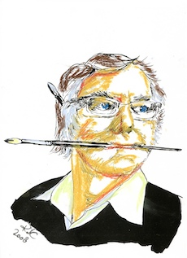

- Geboren am 06. März 1945, Bürger von Disentis/Mustér
- Primar- und Sekundarschule in Disentis/Mustér
- Hochbauzeichnerlehre mit Fähigkeitsausweis in Zürich 1965
- 1967 Eröffnung eines Architekturbüros als selbstständiger Architekt. Planung und Ausführung von 400 kleineren und grösseren Projekten
- Beteiligung am Fernkursus der "Famous Artist" für Gebrauchsgrafik und Illustration anfangs der 70er Jahre
- Verschiedene Werke von Kunst am Bau, vor allem Türblattgestaltungen
- Auszeichnung "Die schöne Fassade" der Siegfried Keller AG 1984/85 für die Pizzeria Surselva in Disentis/Mustér
- Unzählige Entwürfe von Firmen-Logos, Korrespondenzdrucken, etc.
- Festlogos und Programmheftgestaltungen von Sänger- und Musikfesten sowie anderen Grossanlässen
- 1994 Layout und Gestaltung des Fotobuches "Felix Huonder, 1886 - 1960" und Planung der dazugehörigen Ausstellung mit über 170 Fotografien des Fotografen Felix Huonder
- Künstlerische Gestaltung von Ausstellungsständen an der Regionalen Gewerbeschau EX in Disentis/Mustér
- Entwürfe für die Wiederbelebung der Fasnachtsfiguren für die jährliche Vorstellung der "Dertgira Nauscha" am Rosenmontag und Entwurf des entsprechenden Medalliensatzes (80er Jahre)
- 2007 erste und erfolgreiche Bilderausstellung mit Flachrelierfs im Bener-Park in Chur
- Beteiligung an dem "Premi Cultural Paradies" 2007 und 2008 in Ftan